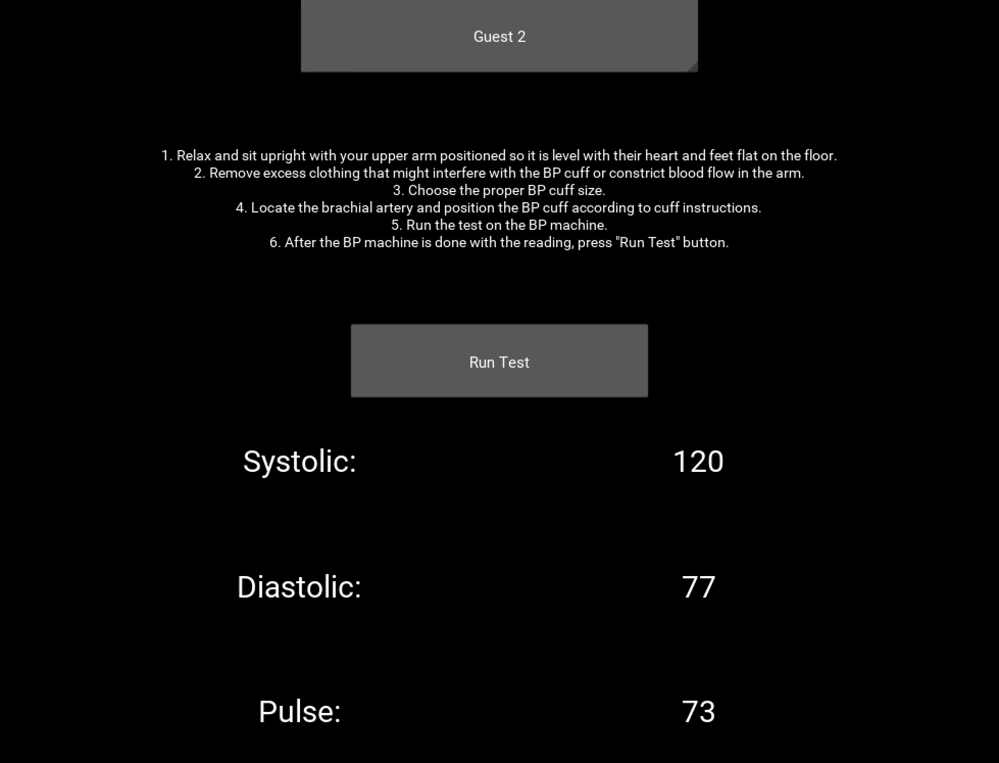
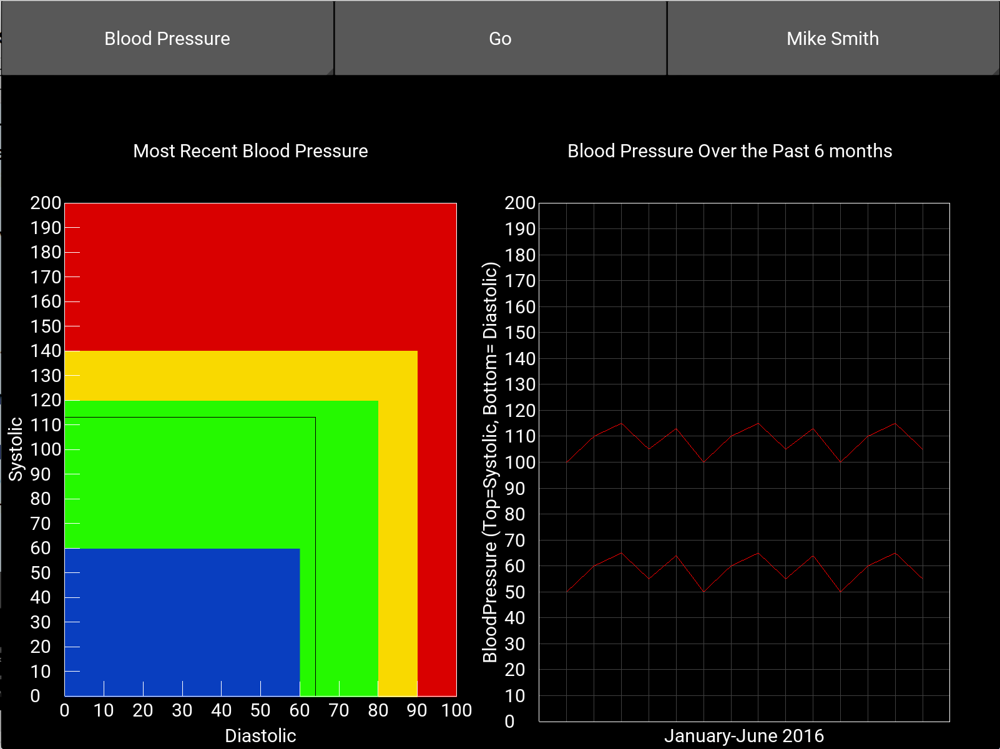

Sensor Interface
The e-Health Library provided by Cooking-Hacks is written in C++. We used the Ctypes Python library to utilize the e-Health Library in Python. We wrote a sensor library to allow users to interact with the sensors in a Pythonic way. The sensor controls library contains high-level functions that abstract away the details of interacting with the sensors.
Data Input App
The input app (to the left) allows patients to collect their medical data, display the results, and send the data to the server. With the simple interface, speed of data collection and storage, and future compatibility with iOS and Android, the app encourages individuals to test more often, decreasing the time-interval between data points for physicians.
RESTful API
The REST API was implemented in Python using the Flask framework. The API supports an arbitrary number of patients (users). Currently, the API supports data from blood pressure, electrical resistance, and heart rate recovery tests, but it can easily be expanded to support other forms of data. The API is flexible because it supports optional parameters for most functions.

Data Visualization App
This app demonstrates a potential use case for doctors. The doctor can view a patient’s most recent blood pressure reading and historic data simultaneously. The drop-down menu allows the doctor to cycle through patients.
